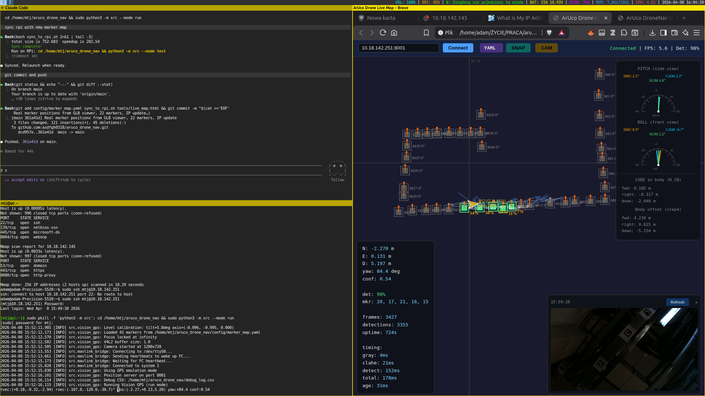
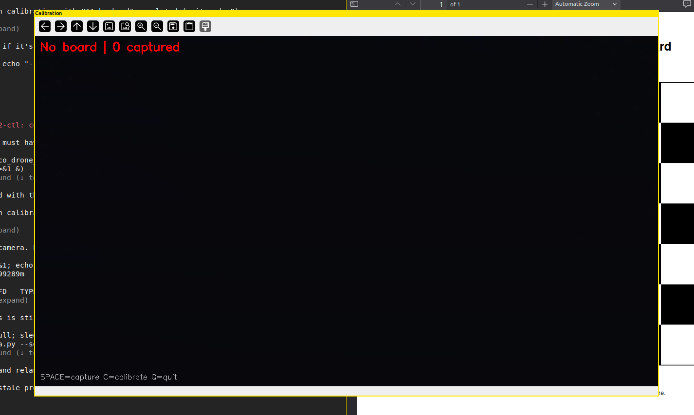
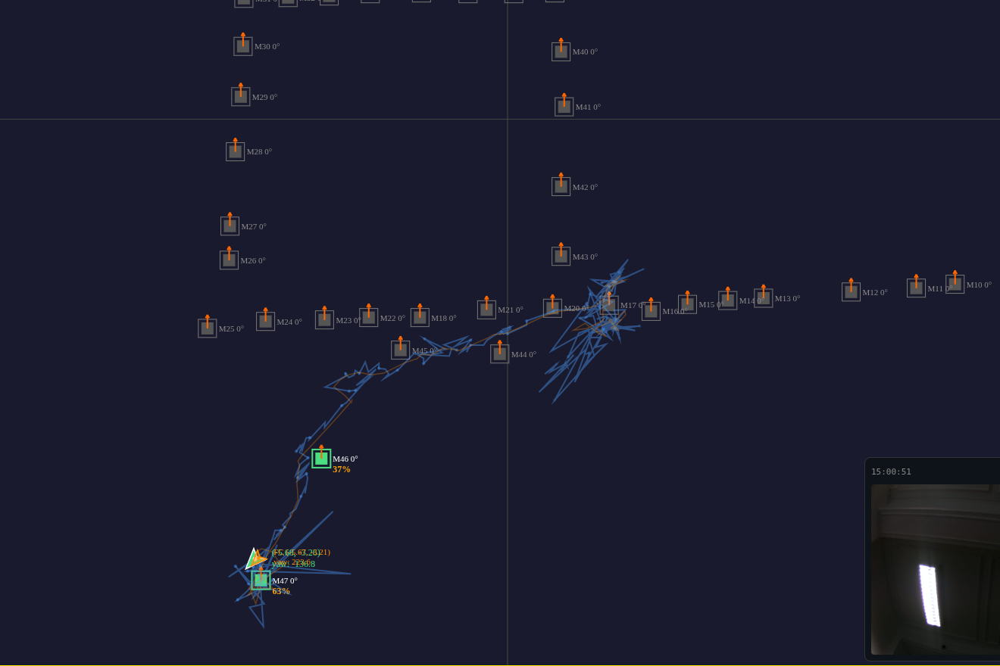
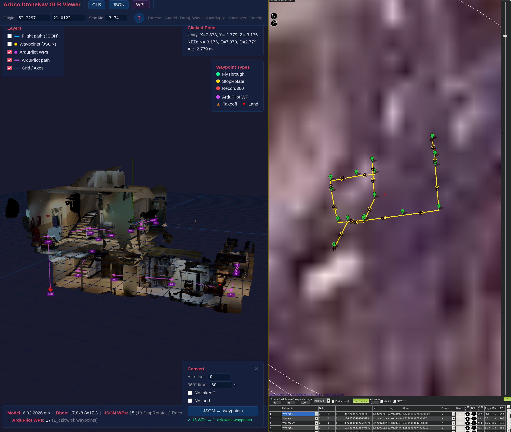
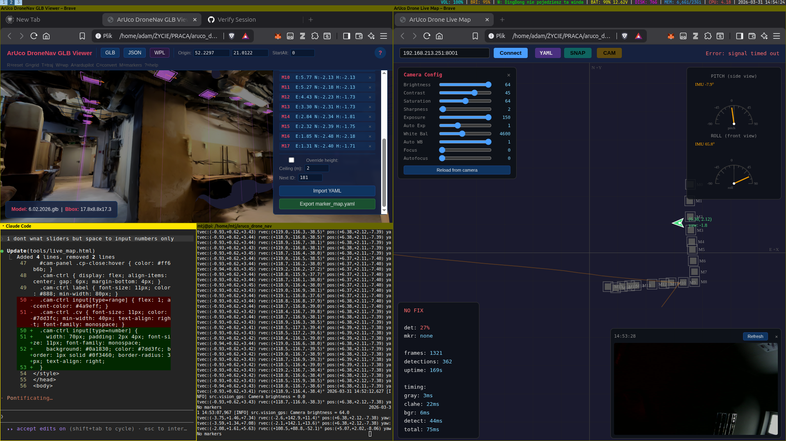
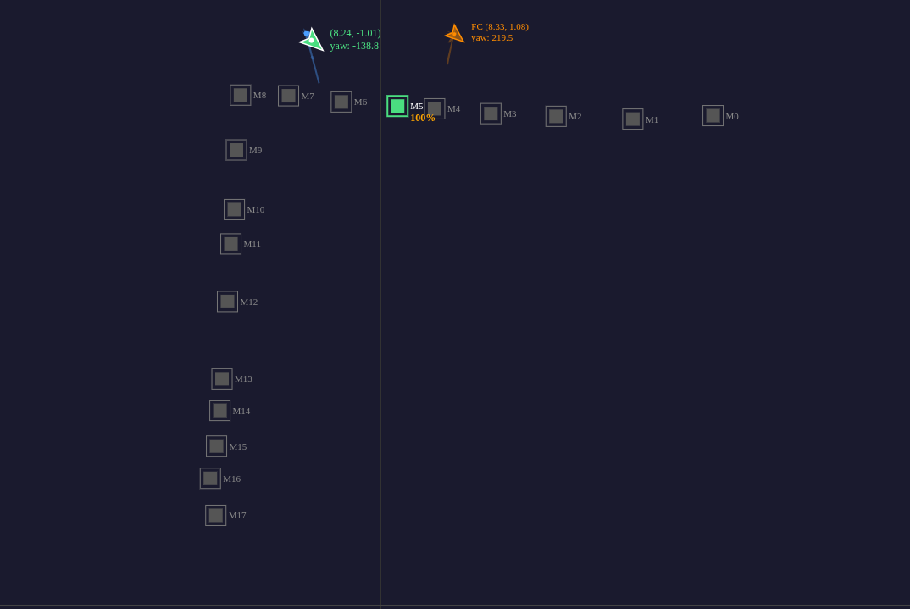
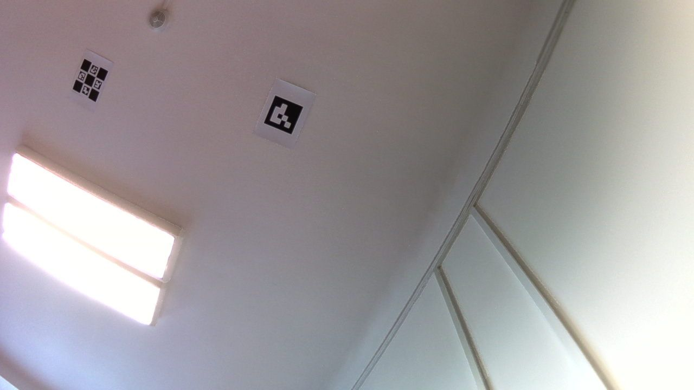
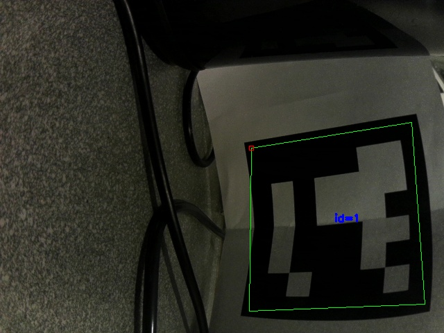

ArUco Vision GPS
Vision-based GPS emulator for indoor drones using ceiling-mounted ArUco markers
A minimal Python system (~920 lines) for Raspberry Pi Zero 2W that detects ArUco markers on the ceiling, calculates world-frame position using angle-based estimation with IMU correction, and sends GPS_INPUT to an ArduCopter flight controller via MAVLink2. The FC handles all navigation, PID control, missions, and failsafes natively.

Live map showing drone tracking through corridor with 30+ ceiling markers
Ceiling Markers (20cm, DICT_4X4_50)
|
USB Camera (MJPG 1280x720)
|
RPi Zero 2W (NixOS)
+-----------------------------+
| Gray -> CLAHE -> ArUco | HTTP :8001
| solvePnP per marker |----> /position (JSON)
| Angle-based + IMU -> NED |----> /debug-frame (JPEG)
| Multi-marker fusion |----> /markers (JSON)
| NED -> lat/lon |----> /camera-config (GET/POST)
+-----------------------------+
| MAVLink2 UART 115200
Flight Controller (ArduCopter)
+-----------------------------+
| GPS_INPUT -> EKF3 |
| Baro -> altitude |
| GPS yaw -> heading |
+-----------------------------+
Key Specs
| Metric | Value |
|---|---|
| Resolution | 1280x720 (MJPG) |
| Detection Rate | 80-100% (corridor), 99% (bench) |
| Processing Time | ~50-90ms/frame |
| FPS | ~11-20 |
| Markers | DICT_4X4_50, 20cm on A4, 47 deployed |
| Working Distance | 1.5-5.0m (ceiling height) |
| Source Code | ~920 lines across 2 files |
Timing Breakdown
gray: 4ms | CLAHE: 30ms | detect: 47ms | total: ~80ms | age: 20msHardware
Raspberry Pi Zero 2W
- OS: NixOS arm64 (kernel 6.6.74)
- User:
mtj, hostnamepi.local - IP: Changes per network — check
sync_to_rpi.shfor current fallback IP - Python: 3.12.8, OpenCV 4.9.0, numpy 1.26.4
- UART:
/dev/ttyS0at 115200 baud - Dependencies: Installed via Nix (not pip)
USB Camera
- MJPG capable, 1280x720 @ 30fps
- Mounted facing upward toward ceiling
- Focus must be locked:
v4l2-ctl --set-ctrl focus_automatic_continuous=0,focus_absolute=0 - Focus lock is automatic on
Camera.start()
Flight Controller
- FC: SpeedyBee F405 V3
- Firmware: Custom ArduCopter build (stock has AP_GPS_MAV compiled out)
- Custom build flags:
AP_GPS_MAV_ENABLED=1,HAL_VISUALODOM_ENABLED=1,EK3_FEATURE_EXTERNAL_NAV=1 - Build via: custom.ardupilot.org
- Connection: UART at 115200 baud, 3-wire (TX, RX, GND)
Markers
- ArUco DICT_4X4_50, 20cm printed on A4 paper
- Ceiling-mounted, facing straight down
- Currently 47 markers deployed (IDs 0-47, with gaps)
- Generate with:
python3 tools/generate_markers.py --ids 0-49 --dictionary DICT_4X4_50 --size 200
Wiring
RPi Zero 2W SpeedyBee F405 V3
+-----------+ +-----------+
| GPIO 14 |----> TX ------> RX (UART) |
| GPIO 15 |<---- RX <------ TX (UART) |
| GND |----> GND ------> GND |
+-----------+ +-----------+
3.3V logic both sides — no level shifter needed
Setup
RPi NixOS Setup
- All dependencies installed via Nix — cannot pip install
- UART:
/dev/ttyS0(no/dev/serial0symlink on NixOS) - USB:
dr_mode=hostrequired for camera - Sudo requires password
Full NixOS configuration details to be added here.
FC Configuration
The system uses GPS emulation mode — the RPi pretends to be a GPS module. Required FC parameters:
# GPS Emulation Mode (active)
AHRS_EKF_TYPE = 3 # Use EKF3
GPS_TYPE = 14 # MAVLink GPS
EK3_SRC1_POSXY = 3 # GPS for XY position
EK3_SRC1_POSZ = 1 # Baro for altitude
EK3_SRC1_YAW = 2 # GPS yaw
COMPASS_ENABLE = 0 # No compass (indoor)
VISO_TYPE = 0 # Disabled
# Serial port (UART connected to RPi)
SERIALx_PROTOCOL = 2 # MAVLink2
SERIALx_BAUD = 115 # 115200 baudAP_GPS_MAV compiled out. Build custom firmware via custom.ardupilot.org with AP_GPS_MAV_ENABLED=1.viso-experimental in git. Uses EK3_SRC1_POSXY=6, VISO_TYPE=1. Not recommended — ArduPilot doesn't handle Z axis properly via VISO.Camera Calibration
Camera intrinsics must be calibrated at the runtime resolution (1280x720). Use a printed chessboard pattern.
- Print a chessboard:
python3 tools/generate_chessboard.py(9x6, 19mm squares) - Run calibration:
python3 tools/calibrate_camera.py --camera 0 --res-w 1280 --res-h 720 \ --width 9 --height 6 --square-size 0.019 --output config/camera_params.yaml - Hold the chessboard at various angles, distances, and positions. Press SPACE to capture each frame. Aim for 15-20 captures.
- Press C to compute calibration. Target reprojection error: < 1.0 px.
- Result is saved to
config/camera_params.yamlwith camera matrix, distortion coefficients, and reprojection error.
Level Calibration (Camera-to-Drone)
Corrects for the physical tilt of the camera relative to the drone body. This is critical for accurate position estimation.
- Place the drone on a level surface directly under a known ArUco marker on the ceiling.
- The marker should be roughly centered in the camera's field of view.
- Run:
python3 tools/calibrate_level.py --config config/system_config.yaml \ --output config/camera_params.yaml --samples 30 - Press SPACE to capture. The tool records the
tvec(translation vector from camera to marker) averaged over 30 frames. - This stores
level_tvec,level_offset_px, andlevel_center_pxincamera_params.yaml.
The level calibration data is used by the position estimator to subtract static camera mounting tilt from the angle-based position calculation. Without it, the drone's "zero position" will be offset from the marker.
Marker Deployment Workflow
The full workflow from printing to verification:
Generate PDFs --> Print A4 --> 3D Scan Building --> Place in GLB Viewer
| | |
v v v
50 marker codes GLB model of environment Click ceiling to
(DICT_4X4_50) assign positions
|
v
Export marker_map.yaml
|
v
Glue markers to ceiling
|
v
Live Map: SNAP each code
to verify detection
1. Generate & Print
python3 tools/generate_markers.py --ids $(seq -s, 0 49) \
--dictionary DICT_4X4_50 --size 18 --format pdf --output markers/- Generates
markers/markers_DICT_4X4_50.pdf— one marker per A4 page - Print at 100% scale (no fit-to-page). Verify marker is 18cm x 18cm.
- Ensure good white border around the black marker for contrast.
2. 3D Environment Scan
Use a 3D scanning app (e.g., Polycam, LiDAR scanner) to create a .glb model of the indoor environment. This model is used for precise marker placement in the GLB viewer.
3. GLB Viewer Marker Placement
- Open
tools/glb_viewer.htmlin a browser - Load your
.glbmodel (drag & drop or GLB button) - Press M to enter Marker Placement Mode (green banner appears)
- Set the Next ID in the side panel
- Click on the ceiling surface — a purple marker square appears with an orange orientation arrow and a vertical drop line
- Repeat for all markers. The panel shows NED coordinates and per-marker height.
- Click Export marker_map.yaml to download the config file
marker_map.yaml and continue editing.4. Live Verification
After gluing markers to the ceiling, verify each one is detected:
- Open
tools/live_map.htmlin a browser - Click YAML to import
config/marker_map.yaml— all markers appear as gray squares - Click Connect (or press SPACE) to connect to the RPi
- Walk the drone under each marker. Detected markers turn green with a weight percentage.
- Press S (SNAP) to capture a camera frame and visually inspect detection quality
- Press K (CAM) to open the camera config panel and adjust brightness, contrast, exposure as needed for the lighting conditions
5. marker_map.yaml Format
# Coordinate system (NED):
# X: North, Y: East, Z: Down
# Origin: takeoff position on the floor
origin:
x: 0.0
y: 0.0
z: 0.0
ceiling_height: 2.0
markers:
- id: 0
position: [4.85, 7.14, 1.98] # [North, East, Down]
orientation: 0 # degrees, marker top edge direction
- id: 1
position: [3.68, 7.09, 1.89]
orientation: 06. Orientation Guide
The orientation value defines how the marker's top edge aligns with the world frame. OpenCV defines the marker coordinate frame with corners:
Corner 0 (top-left) -----> Corner 1 (top-right) = marker +X axis
| |
Corner 3 (bottom-left) -- Corner 2 (bottom-right)With orientation: 0, the marker's top edge (C0→C1) points North (+X in NED).
With orientation: 180, the marker's top edge points South (rotated 180°).
The orange arrow in the GLB viewer shows this direction. When gluing the marker face-down on the ceiling, align the printed page's top edge with the arrow direction.
Flight Operations
Pre-flight Checklist
- FC parameters set (GPS_TYPE=14, EK3_SRC1_POSXY=3, etc.)
- Camera calibrated (
camera_params.yamlhas matrix + level calibration) marker_map.yamlhas all deployed marker positions- Markers physically mounted on ceiling, good lighting, no occlusions
- RPi powered, connected to WiFi, UART connected to FC
system_config.yaml: correct serial port and baud rate- Camera focus locked (automatic on startup)
Run Modes
| Mode | Command | Description |
|---|---|---|
run | sudo python3 -m src --mode run | Flight mode: GPS_INPUT to FC via MAVLink. Requires sudo for UART. |
test | sudo python3 -m src --mode test | Console: prints position to terminal. No FC connection. |
stream | python3 -m src --mode stream | HTTP server only on port 8001. No FC, no console output. |
All modes start the HTTP server on port 8001 for remote monitoring.
# Deploy and run
./sync_to_rpi.sh
ssh mtj@pi.local # or use IP from sync_to_rpi.sh
cd /home/mtj/aruco_drone_nav
sudo python3 -m src --mode runLive Monitoring
Open tools/live_map.html and connect to the RPi. The map shows:
- Green triangle — RPi vision position (what the camera computes)
- Orange triangle — FC's EKF position (what ArduPilot thinks via GLOBAL_POSITION_INT)
- Green markers — currently detected markers with weight % (e.g., "62%")
- Gray markers — configured but not currently detected
- Blue trail — vision position history
- Orange trail — FC position history
- Pitch/Roll gauges — IMU (orange), camera (cyan), combined (green)
Keyboard shortcuts: SPACE=connect, C=clear trails, R=reset view, S=snapshot, K=camera config
Camera Tuning
For adjusting camera settings to match lighting conditions:
- Press S (or SNAP button) to capture a single frame from the drone camera. Displays in an overlay — check marker visibility and contrast.
- Press K (or CAM button) to open the camera config panel. Adjust values and press Enter — changes apply to the drone camera immediately.
Key settings for indoor marker detection:
| Setting | Typical Range | Notes |
|---|---|---|
| auto_exposure | 1 (manual) or 3 (auto) | Set to 1 before adjusting exposure |
| exposure | -8 to -3 | Lower = less motion blur, darker image |
| gain | 0-128 | Amplifies signal, adds noise at high values |
| brightness | -20 to 20 | Global brightness offset |
| contrast | 20-40 | Higher helps marker edges |
Tools Reference
Calibration
| Tool | Description | Usage |
|---|---|---|
calibrate_camera.py | Camera intrinsics via chessboard | python3 tools/calibrate_camera.py --camera 0 --res-w 1280 --res-h 720 |
calibrate_level.py | Camera mount tilt calibration | python3 tools/calibrate_level.py --samples 30 |

Camera calibration tool waiting for chessboard frames
Marker Generators
| Tool | Description | Usage |
|---|---|---|
generate_markers.py | ArUco marker PNG/PDF generator | python3 tools/generate_markers.py --ids 0-49 --size 200 |
generate_chessboard.py | Chessboard calibration pattern | python3 tools/generate_chessboard.py |
Debug & Visualization
| Tool | Description | Usage |
|---|---|---|
live_map.html | Browser live 2D map: markers, weights, FC arrow, SNAP, CAM config | Open in browser, connect to RPi |
glb_viewer.html | 3D GLB viewer + marker placement (M key) + flight path | Open in browser, load GLB |
debug_viewer.py | Manual frame capture with overlay | python3 tools/debug_viewer.py --host pi.local |
terminal_map.py | Curses ASCII position map (SSH-friendly) | python3 tools/terminal_map.py --host pi.local |
orientation_check.py | Interactive NED axis / marker orientation verification | python3 tools/orientation_check.py |

Live 2D map with 30+ markers

3D GLB viewer with markers and flight path
Testing
| Tool | Description | Usage |
|---|---|---|
test_gps_input.py | Send synthetic GPS_INPUT to verify FC fix | python3 tools/test_gps_input.py |
test_local_detection.py | Test detection on a saved image file | python3 tools/test_local_detection.py image.jpg |
mavlink_debug.py | Raw MAVLink serial diagnostic | python3 tools/mavlink_debug.py --port /dev/ttyS0 |
Mission Converters
| Tool | Description | Usage |
|---|---|---|
vr_to_waypoints.py | VR planner JSON to ArduPilot .waypoints | python3 tools/vr_to_waypoints.py path.json --frame global |
tlog_to_vr_json.py | Mission Planner .tlog to VR JSON | python3 tools/tlog_to_vr_json.py flight.tlog |
HTTP API
All endpoints are served on port 8001 (configurable). All responses include Access-Control-Allow-Origin: *.
| Method | Path | Content-Type | Description |
|---|---|---|---|
| GET | /position | application/json | Current position, yaw, markers, weights, timing, IMU, FC feedback |
| GET | /markers | application/json | Array of marker positions from marker_map.yaml |
| GET | /debug-frame | image/jpeg | Current camera frame (503 if none) |
| GET | /camera-config | application/json | Current camera control values |
| POST | /camera-config | application/json | Apply camera settings, returns applied values |
Sample /position Response
{
"n": 0.549, "e": -0.289, "d": 1.712,
"yaw": 159.2,
"marker_ids": ["0", "1"],
"confidence": 0.85,
"marker_weights": {"0": 0.62, "1": 0.38},
"detection_rate": 0.95,
"uptime": 42.1,
"imu_roll": -2.1, "imu_pitch": 1.4,
"cam_pitch": 3.2, "cam_roll": -1.8,
"fc": {"lat": 52.2297, "lon": 21.0122, "alt": 1.7, "yaw": 160.2},
"timing": {"gray": "4", "clahe": "30", "detect": "47", "total": "81", "age": "20"}
}Camera Config POST
// Set exposure to manual and adjust
POST /camera-config
{"auto_exposure": 1, "exposure": -5, "gain": 64}Technical Deep Dive
Detection Pipeline
Frame (1280x720 MJPG, V4L2 buffer=1)
--> Grayscale (4ms)
--> CLAHE (clipLimit=2.5, 8x8 tiles) (30ms)
--> ArUco detectMarkers on grayscale (~47ms)
adaptiveThresh windows: [3, 17, 31, 45]
minOtsuStdDev: 3.0 (dark environment support)
--> solvePnPGeneric per marker (IPPE_SQUARE)
--> Disambiguate: pick solution with most vertical marker Z
--> Per-marker Detection result (tvec, rvec, centroid)
OpenCV API compatibility: the code handles both the old API (DetectorParameters_create() + cv2.aruco.detectMarkers()) and the new API (ArucoDetector class). Detected at runtime via hasattr.
Angle-Based Position Estimation
Position is computed from tvec angles + IMU pitch/roll. The rotation matrix R_cm from solvePnP is not used for position — at near-perpendicular viewing (our case), IPPE returns two solutions with similar reprojection error but mirrored world positions. Only yaw is extracted from R_cm because the in-plane (Z) rotation is well-conditioned.
# Camera-frame angles to marker
cam_ax = atan2(tvec[0], tvec[2]) # X angle
cam_ay = atan2(tvec[1], tvec[2]) # Y angle
height = norm(tvec) # distance to marker
# IMU correction for drone tilt + level calibration offset
world_ax = imu_pitch + (cam_ax - level_ax)
world_ay = imu_roll + (cam_ay - level_ay)
# Body-frame offset
body_fwd = -height * tan(world_ax) # cam_X = -body_forward
body_right = height * tan(world_ay) # cam_Y = body_right
# Rotate by yaw to NED world frame
pos = marker_pos - yaw_rotation @ [body_fwd, body_right, body_down]
# Yaw from vision (in-plane rotation is reliable)
R_bw = R_mw @ R_cm.T @ R_CB_NOMINAL.T
yaw = atan2(R_bw[1,0], R_bw[0,0])[[-1,0,0],[0,1,0],[0,0,-1]] (det=+1, proper rotation — 180° around Y axis). Maps camera frame to body frame for the upward-facing camera. Used for yaw extraction and body-frame tvec display, but position estimation uses the angle-based approach directly.Multi-Marker Fusion
When multiple markers are detected, positions are fused using inverse-distance weighting:
# Weight: closer markers horizontally are more reliable
horiz_dist = sqrt(tvec_x² + tvec_y²)
w = 1.0 / (horiz_dist + 0.1)
# Weighted average position
pos = sum(pos_i * w_i) / sum(w_i)
# Circular weighted mean for yaw (handles 0/360 wrap)
yaw = atan2(sum(sin(yaw_i) * w_i), sum(cos(yaw_i) * w_i))
# Confidence: scales with marker count, drops if estimates disagree
conf = min(1.0, N / 3.0) * exp(-std_of_positions)
# Dynamic GPS accuracy sent to FC (higher confidence = tighter accuracy)
horiz_accuracy = 0.05 / max(confidence, 0.05) # 0.05m–1.0m rangeMAVLink2 GPS_INPUT
Critical: The connection must use mavlink20=True. The yaw field in GPS_INPUT is a MAVLink2 extension field — without MAVLink2, it is silently truncated and the FC never receives heading data.
# Connection
conn = mavutil.mavlink_connection(port, mavlink20=True, baud=115200)
# GPS_INPUT fields
lat = origin_lat + (north / 111111.0)
lon = origin_lon + (east / (111111.0 * cos(origin_lat)))
yaw_cd = ((yaw_deg % 360) + 360) % 360 * 100 # centidegrees
fix_type = 3 # 3D fix
satellites= 12
hdop = 0.3 # high confidence
horiz_acc = 0.05-1.0 # scales with detection confidenceHeartbeat requirement: ArduPilot does NOT stream telemetry on non-primary UARTs until it receives heartbeats from the companion computer. The bridge sends 5 heartbeats before wait_heartbeat() and continues at 1 Hz in the receive loop.
PL011 UART bug: /dev/ttyAMA0 on RPi throws SerialException: device reports readiness to read but returned no data. Workaround: monkey-patch serial.Serial.read to catch and return b''.
Coordinate Systems
| Frame | X | Y | Z | Used In |
|---|---|---|---|---|
| NED (internal) | North | East | Down | Position estimation, marker_map.yaml, HTTP API |
| Unity (GLB) | East | Up | North | GLB viewer, VR planner JSON |
| Camera | Right | Down | Forward | solvePnP output (tvec, rvec) |
Conversions
# NED → lat/lon (for GPS_INPUT)
lat = origin_lat + north / 111111.0
lon = origin_lon + east / (111111.0 * cos(origin_lat))
# Unity → NED (for GLB viewer)
N = unity_z, E = unity_x, D = -unity_y
# Unity → Scene (Three.js)
scene_x = -unity_x, scene_y = unity_y, scene_z = unity_zsolvePnP Temporal Consistency & Disambiguation
solvePnPGeneric with SOLVEPNP_IPPE_SQUARE returns two solutions for flat markers. At near-perpendicular viewing (ceiling markers), both have similar reprojection error.
Disambiguation: Pick the solution where the marker Z axis is most vertical in the camera frame: min(mZ_x² + mZ_y²). This works because ceiling markers face straight down — the correct solution has a nearly vertical marker normal.
Temporal consistency: After first detection, subsequent frames use SOLVEPNP_ITERATIVE with the previous frame's rvec/tvec as initial guess. Sanity check: if distance > 10m or rvec magnitude > 20π, discard and reset temporal state for that marker.
Config Reference
system_config.yaml
serial:
port: "/dev/ttyS0" # NixOS UART
baud: 115200
camera:
device_id: 0
width: 1280
height: 720
fps: 30
aruco:
dictionary: "DICT_4X4_50"
marker_size_m: 0.20 # default 20cm (per-marker override in marker_map.yaml)
vision_server:
port: 8001
ekf_origin:
lat: 52.2297 # Warsaw
lon: 21.0122
alt: 100.0 # arbitrary MSL for indoor usecamera_params.yaml
Generated by calibrate_camera.py and calibrate_level.py:
camera_matrix: [[771.43, 0, 662.51],
[0, 860.31, 343.68],
[0, 0, 1]]
distortion_coefficients: [0.658, -2.628, 0.072, -0.017, 2.542]
image_width: 1280
image_height: 720
reprojection_error: 0.758
# Level calibration (from calibrate_level.py)
level_tvec: [0.341, -0.033, 3.361]
level_offset_px: [126.67, -49.10]
level_center_px: [766.67, 310.90]If runtime resolution differs from calibration resolution, the camera matrix is automatically scaled.
marker_map.yaml
See Marker Deployment > YAML Format for the full format reference.
Troubleshooting
Known Issues
| Issue | Details |
|---|---|
CORNER_REFINE_CONTOUR crash | Rare assertion error on some frames. Caught by try-except, frame is skipped. |
| Detection bottleneck | ArUco detect takes ~47ms at 1280x720. Total ~80ms/frame (~11-20 FPS depending on CLAHE and lighting). |
| Camera detector ordering | Detector must be created BEFORE camera.start() — OpenCV thread safety segfault otherwise. |
| R_cm unreliable at perpendicular viewing | IPPE ambiguity. Position uses tvec+IMU angles instead. |
YAW_DEBUG log line | Debug matrix computation still runs per-frame in estimate_single(). Benign at INFO level but adds unnecessary work. |
Common Problems
| Problem | Solution |
|---|---|
| No heartbeat from FC | Check wiring (TX/RX swapped?), baud rate (115200), serial protocol (MAVLink2). Use mavlink_debug.py to diagnose. |
| No markers detected | Check lighting (too dark/bright), marker size (20cm), distance (<5m), dictionary (DICT_4X4_50). Use test_local_detection.py on a saved frame. Try adjusting camera exposure via CAM panel in live_map. |
| Position drifts | Improve marker coverage (more markers), recalibrate camera, recalibrate level offset. Check if marker_map.yaml positions match physical positions. |
| Yaw always 0 at FC | Ensure mavlink20=True in connection (MAVLink2 required for GPS_INPUT yaw extension field). |
| Position offset when stationary | Run level calibration. Check orientation value in marker_map.yaml matches physical mounting. |
| GPS_INPUT not accepted by FC | Custom firmware needed: AP_GPS_MAV_ENABLED=1. Set GPS_TYPE=14. |
| RPi PL011 UART errors | Normal on RPi — pyserial monkey-patch in mavlink_bridge.py handles it automatically. |
| Cannot pip install on RPi | NixOS uses read-only /nix/store. All deps must be installed via Nix configuration (Pawel manages this). |
Gallery

Full development workspace: GLB viewer, live map, code editor, debug log

Vision position (green) vs FC EKF position (orange) comparison

Camera view of ceiling-mounted ArUco markers

Close-up ArUco marker detection with bounding box